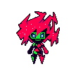

Dónde y qué
Constructo en línea
Extraer el chip
Se quitan la app, sus accesos directos, sus alarmas de Windows y su entrada en «Agregar o quitar programas». Además, si quieres:
Ollama y sus modelos se quedan: quítalos desde «Agregar o quitar programas» si quieres.